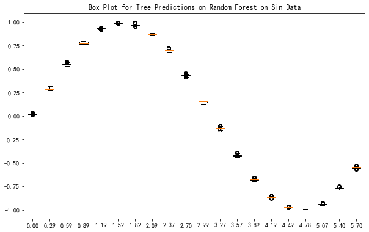
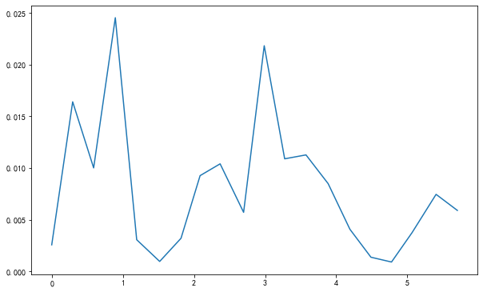
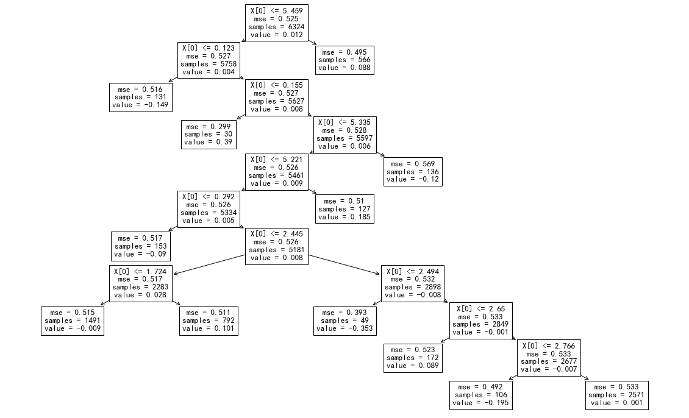
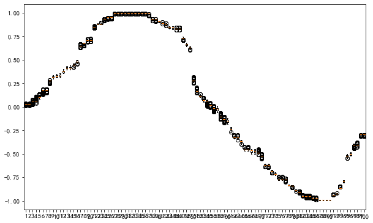
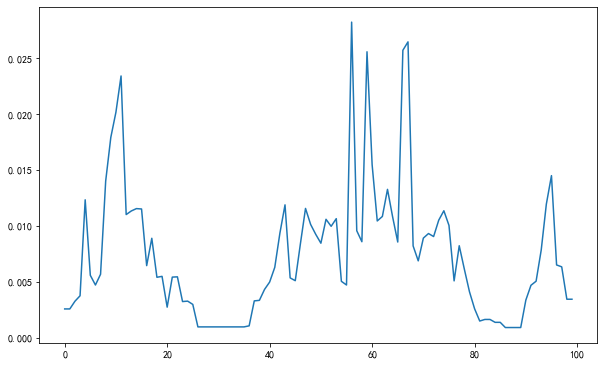
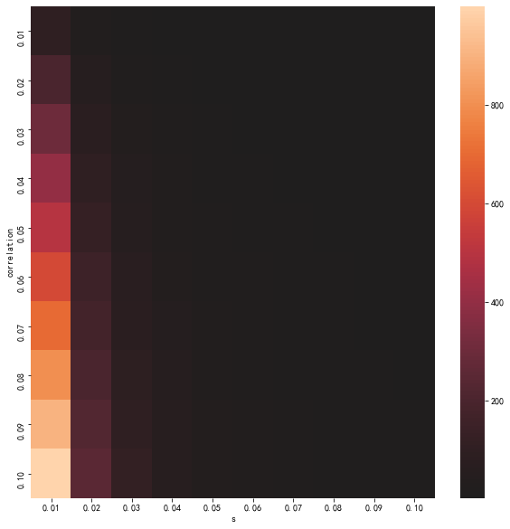
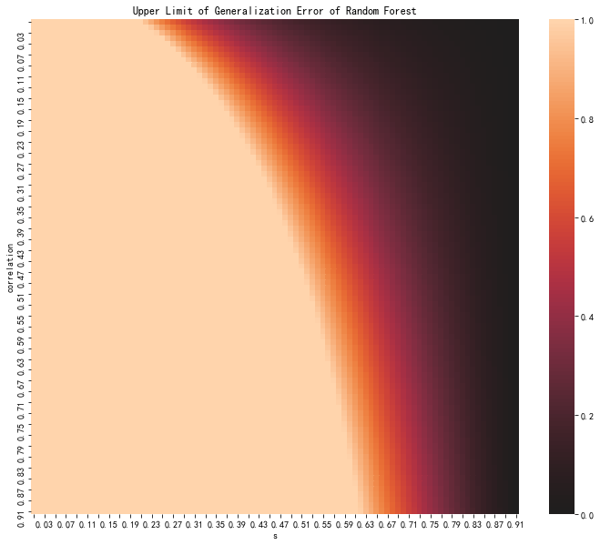

Random Forest Playground
Contents
22. Random Forest Playground#
Outline
Generate data of specific functions
Fit the functions using ensemble methods
Analyze the trees
from sklearn.ensemble import RandomForestRegressor
from sklearn.tree import DecisionTreeRegressor
from sklearn.model_selection import train_test_split, cross_val_score, learning_curve, validation_curve, GridSearchCV, RandomizedSearchCV
from sklearn.feature_selection import SelectKBest, SelectFromModel, chi2, mutual_info_regression
from sklearn.pipeline import Pipeline
import sklearn.tree as _tree
import matplotlib.pyplot as plt
import matplotlib as mpl
mpl.rcParams['axes.unicode_minus'] = False
import seaborn as sns
import numpy as np
from random import random
from joblib import dump, load
23. Model#
23.1. Components#
# Number of trees in random forest
n_estimators = [int(x) for x in np.linspace(1000, 4000, 11)]
# Number of features to consider at every split
max_features = ['auto', 'sqrt']
# Maximum number of levels in tree
max_depth = [int(x) for x in range(10, 30, 2)]
max_depth.append(None)
# Minimum number of samples required to split a node
min_samples_split = [0.001, 0.01, 0.02, 0.05, 0.1, 0.2]
# Minimum number of samples required at each leaf node
min_samples_leaf = [10, 20, 30, 40, 50]
# Method of selecting samples for training each tree
bootstrap = [True, False]
rf_random_grid = {
'rf__n_estimators': n_estimators,
'rf__max_features': max_features,
'rf__max_depth': max_depth,
'rf__min_samples_split': min_samples_split,
'rf__min_samples_leaf': min_samples_leaf,
'rf__bootstrap': bootstrap
}
rf = RandomForestRegressor(random_state=42, oob_score=True)
##########
pipeline_steps = [
('rf', rf),
]
pipeline = Pipeline(pipeline_steps)
23.2. Data without Noise#
X_sin = [[6*random()] for i in range(10000)]
y_sin = np.sin(X_sin)
X_sin_test = [[6*random()] for i in range(10000)]
y_sin_test = np.sin(X_sin_test)
model = RandomizedSearchCV(
pipeline,
cv=10,
param_distributions = rf_random_grid,
verbose=3,
n_jobs=-1
)
model.fit(X_sin, y_sin)
Fitting 10 folds for each of 10 candidates, totalling 100 fits
[Parallel(n_jobs=-1)]: Using backend LokyBackend with 4 concurrent workers.
[Parallel(n_jobs=-1)]: Done 24 tasks | elapsed: 25.1s
[Parallel(n_jobs=-1)]: Done 100 out of 100 | elapsed: 4.6min finished
/Users/leima/anaconda/envs/mini-code/lib/python3.8/site-packages/sklearn/pipeline.py:354: DataConversionWarning: A column-vector y was passed when a 1d array was expected. Please change the shape of y to (n_samples,), for example using ravel().
self._final_estimator.fit(Xt, y, **fit_params)
RandomizedSearchCV(cv=10, error_score=nan,
estimator=Pipeline(memory=None,
steps=[('rf',
RandomForestRegressor(bootstrap=True,
ccp_alpha=0.0,
criterion='mse',
max_depth=None,
max_features='auto',
max_leaf_nodes=None,
max_samples=None,
min_impurity_decrease=0.0,
min_impurity_split=None,
min_samples_leaf=1,
min_samples_split=2,
min_weight_fraction_leaf=0.0,
n_estima...
'rf__max_depth': [10, 12, 14, 16, 18,
20, 22, 24, 26, 28,
None],
'rf__max_features': ['auto', 'sqrt'],
'rf__min_samples_leaf': [10, 20, 30, 40,
50],
'rf__min_samples_split': [0.001, 0.01,
0.02, 0.05,
0.1, 0.2],
'rf__n_estimators': [1000, 1300, 1600,
1900, 2200, 2500,
2800, 3100, 3400,
3700, 4000]},
pre_dispatch='2*n_jobs', random_state=None, refit=True,
return_train_score=False, scoring=None, verbose=3)
model.score(X_sin, y_sin)
0.9999470645342253
model.best_params_
{'rf__n_estimators': 1600,
'rf__min_samples_split': 0.001,
'rf__min_samples_leaf': 30,
'rf__max_features': 'auto',
'rf__max_depth': 10,
'rf__bootstrap': True}
dump(model, 'reports/rf_sin.joblib')
['reports/rf_sin.joblib']
Plot out the result
fig, ax = plt.subplots(figsize=(10,6.18))
ax.plot(
X_sin_test,
model.predict(X_sin_test),
'.'
)
ax.plot(
[y for y,_ in sorted(zip(X_sin_test, y_sin_test))],
[x for _,x in sorted(zip(X_sin_test, y_sin_test))],
'k-'
)
ax.set_title(f'Random Forest on Sin Data; Test $R^2$ Score: {model.score(X_sin_test, y_sin_test):0.2f}')
Text(0.5, 1.0, 'Random Forest on Sin Data; Test $R^2$ Score: 1.00')
X_sin_est = sorted(X_sin_test)[::500]
y_sin_est_pred = []
for i in X_sin_est:
i_y_sin_est_pred = []
for est in model.best_estimator_['rf'].estimators_:
i_y_sin_est_pred.append(
est.predict([i]).tolist()
)
i_y_sin_est_pred = sum(i_y_sin_est_pred, [])
y_sin_est_pred.append(i_y_sin_est_pred)
y_sin_est_pred_boxsize = []
for i in y_sin_est_pred:
y_sin_est_pred_boxsize.append(np.percentile(i, 75) - np.percentile(i, 25))
fig, ax = plt.subplots(figsize=(10,6.18))
ax.boxplot(
y_sin_est_pred
)
ax.set_xticklabels(
[f'{i:0.2f}' for i in sum(X_sin_est,[])]
)
ax.set_title('Box Plot for Tree Predictions on Random Forest on Sin Data');

fig, ax = plt.subplots(figsize=(10,6.18))
ax.plot(
X_sin_est,
y_sin_est_pred_boxsize
);

fig, ax = plt.subplots(figsize=(10,6.18))
sns.distplot(
y_sin_est_pred_boxsize,
bins=20,
ax=ax
)
<matplotlib.axes._subplots.AxesSubplot at 0x133374460>
23.3. Data with Noise#
X_sin_noise = [[6*random()] for i in range(10000)]
y_sin_noise = [i * (1 + 0.1*(random()-0.5)) for i in np.sin(X_sin)]
X_sin_noise_test = [[6*random()] for i in range(10000)]
y_sin_noise_test = [i * (1 + 0.1*(random()-0.5)) for i in np.sin(X_sin_noise_test)]
model_noise = RandomizedSearchCV(
pipeline,
cv=10,
param_distributions = rf_random_grid,
verbose=3,
n_jobs=-1
)
model_noise.fit(X_sin_noise, y_sin_noise)
Fitting 10 folds for each of 10 candidates, totalling 100 fits
[Parallel(n_jobs=-1)]: Using backend LokyBackend with 4 concurrent workers.
[Parallel(n_jobs=-1)]: Done 24 tasks | elapsed: 5.3min
[Parallel(n_jobs=-1)]: Done 100 out of 100 | elapsed: 22.2min finished
/Users/leima/anaconda/envs/mini-code/lib/python3.8/site-packages/sklearn/pipeline.py:354: DataConversionWarning: A column-vector y was passed when a 1d array was expected. Please change the shape of y to (n_samples,), for example using ravel().
self._final_estimator.fit(Xt, y, **fit_params)
RandomizedSearchCV(cv=10, error_score=nan,
estimator=Pipeline(memory=None,
steps=[('rf',
RandomForestRegressor(bootstrap=True,
ccp_alpha=0.0,
criterion='mse',
max_depth=None,
max_features='auto',
max_leaf_nodes=None,
max_samples=None,
min_impurity_decrease=0.0,
min_impurity_split=None,
min_samples_leaf=1,
min_samples_split=2,
min_weight_fraction_leaf=0.0,
n_estima...
'rf__max_depth': [10, 12, 14, 16, 18,
20, 22, 24, 26, 28,
None],
'rf__max_features': ['auto', 'sqrt'],
'rf__min_samples_leaf': [10, 20, 30, 40,
50],
'rf__min_samples_split': [0.001, 0.01,
0.02, 0.05,
0.1, 0.2],
'rf__n_estimators': [1000, 1300, 1600,
1900, 2200, 2500,
2800, 3100, 3400,
3700, 4000]},
pre_dispatch='2*n_jobs', random_state=None, refit=True,
return_train_score=False, scoring=None, verbose=3)
model_noise.score(X_sin, y_sin)
-0.034076931063944604
model_noise.best_params_
{'rf__n_estimators': 1300,
'rf__min_samples_split': 0.2,
'rf__min_samples_leaf': 30,
'rf__max_features': 'sqrt',
'rf__max_depth': 10,
'rf__bootstrap': True}
dump(model_noise, 'reports/rf_sin_noise.joblib')
['reports/rf_sin_noise.joblib']
fig, ax = plt.subplots(figsize=(2*10, 2*6.18))
_tree.plot_tree(
model_noise.best_estimator_['rf'].estimators_[0]
);

fig, ax = plt.subplots(figsize=(10,6.18))
ax.plot(
X_sin_noise_test,
model.predict(X_sin_noise_test),
'r.', alpha=0.1
)
ax.plot(
np.linspace(0,6,100),
np.sin(np.linspace(0,6,100)),
'k-'
)
ax.set_title(f'Random Forest on Sin Data with Noise; Test $R^2$ Score: {model.score(X_sin_noise_test, y_sin_noise_test):0.2f}')
Text(0.5, 1.0, 'Random Forest on Sin Data with Noise; Test $R^2$ Score: 1.00')
X_sin_noise_est = sorted(X_sin_noise_test[::100])
y_sin_noise_est_pred = []
for i in X_sin_noise_est:
i_y_sin_noise_est_pred = []
for est in model.best_estimator_['rf'].estimators_:
i_y_sin_noise_est_pred.append(
est.predict([i]).tolist()
)
i_y_sin_noise_est_pred = sum(i_y_sin_noise_est_pred, [])
y_sin_noise_est_pred.append(i_y_sin_noise_est_pred)
y_sin_noise_est_pred_boxsize = []
for i in y_sin_noise_est_pred:
y_sin_noise_est_pred_boxsize.append(np.percentile(i, 75) - np.percentile(i, 25))
fig, ax = plt.subplots(figsize=(10,6.18))
ax.boxplot(
y_sin_noise_est_pred
);

fig, ax = plt.subplots(figsize=(10,6.18))
ax.plot(
y_sin_noise_est_pred_boxsize
);

fig, ax = plt.subplots(figsize=(10,6.18))
sns.distplot(
y_sin_noise_est_pred_boxsize,
bins=20,
ax=ax
)
<matplotlib.axes._subplots.AxesSubplot at 0x13166be80>
fig, ax = plt.subplots(figsize=(10,6.18))
sns.distplot(
y_sin_noise_est_pred_boxsize,
bins=20,
ax=ax,
hist=False,
label='with Noise'
)
sns.distplot(
y_sin_est_pred_boxsize,
bins=20,
ax=ax,
hist=False,
label='without Noise'
)
<matplotlib.axes._subplots.AxesSubplot at 0x131c35100>
24. Generalization Error#
\[
P_{err} \leq \frac{\bar \rho (1-s^2) }{s^2}.
\]
def generalization_error(rhob, s):
res = rhob * (1-s**2)/s**2
if res >1:
res = 1
return res
generalization_error(0.2, 0.8)
0.11249999999999995
pe_data = [
[
generalization_error(rhob, s) for s in np.linspace(0.01,0.1,10)
] for rhob in np.linspace(0.01,0.1,10)
]
pe_data_s_label = [
s for s in np.linspace(0.01,0.1,10)
]
pe_data_rhob_label = [
rhob for rhob in np.linspace(0.01,0.1,10)
]
fig, ax = plt.subplots(figsize=(10,10))
sns.heatmap(pe_data, center=0, ax=ax)
ax.set_xlabel('s')
ax.set_ylabel('correlation')
ax.set_xticklabels(
[f'{i:0.2f}' for i in pe_data_s_label]
)
ax.set_yticklabels(
[f'{i:0.2f}' for i in pe_data_rhob_label]
);

temp_space = np.linspace(0.1, 1, 91)
pe_data = [
[
generalization_error(rhob, s) for s in temp_space
] for rhob in temp_space
]
pe_data_s_label = [
s for s in temp_space
]
pe_data_rhob_label = [
rhob for rhob in temp_space
]
fig, ax = plt.subplots(figsize=(12,10))
sns.heatmap(pe_data, center=0, ax=ax)
ax.set_xlabel('s')
ax.set_ylabel('correlation')
ax.set_xticklabels(
[f'{i:0.2f}' for i in (ax.get_xticks() + 0.1)/100]
)
ax.set_yticklabels(
[f'{i:0.2f}' for i in (ax.get_yticks() + 0.1)/100]
)
for label in ax.xaxis.get_ticklabels()[::2]:
label.set_visible(False)
for label in ax.yaxis.get_ticklabels()[::2]:
label.set_visible(False)
ax.set_title('Upper Limit of Generalization Error of Random Forest');
